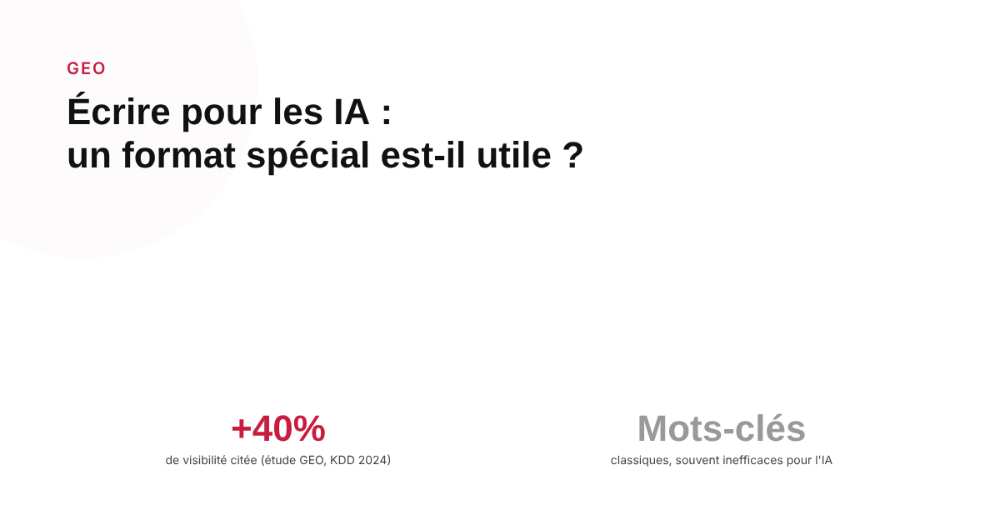
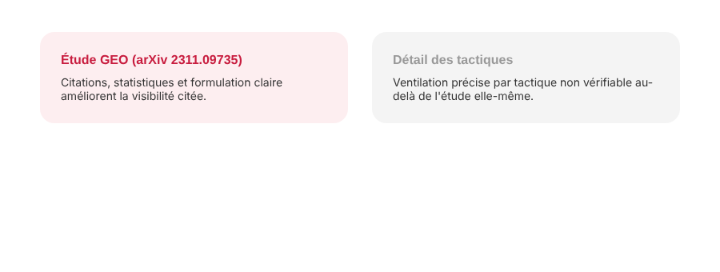

Écrire pour les IA génératives : le contenu doit-il avoir un format spécial pour être cité ?
Une équipe de chercheurs de Princeton, Georgia Tech et l'Allen Institute for AI a testé en conditions contrôlées ce qui augmente réellement les chances d'être cité par un moteur génératif. Les résultats surprennent par endroits — et contredisent certains réflexes SEO classiques.

La question revient dans presque chaque brief GEO : faut-il écrire différemment pour être cité par ChatGPT, Perplexity ou les AI Overviews ? La réponse la plus solide ne vient pas d'une agence ou d'un outil marketing, mais d'un papier de recherche publié à une conférence scientifique reconnue, qui a testé la question directement.
Un papier de recherche, pas un article de blog marketing
« GEO: Generative Engine Optimization », signé par Pranjal Aggarwal et des coauteurs de Princeton, Georgia Tech et l'Allen Institute for AI, a été publié à la conférence KDD 2024 — l'une des conférences académiques les plus reconnues en extraction de connaissances et data mining. Le préprint est disponible sur arXiv (référence 2311.09735). C'est l'une des rares études sur le sujet qui teste des hypothèses en conditions contrôlées plutôt que de se contenter d'observations ponctuelles.
Ce que le papier a réellement testé
Les chercheurs ont comparé plusieurs méthodes de réécriture d'un même contenu : rendre le texte plus autoritaire, y ajouter des statistiques, y ajouter des citations et des références externes, simplifier le langage, et — à titre de comparaison avec les pratiques SEO classiques — ajouter des mots-clés. Le papier rapporte un gain de visibilité citationnelle allant jusqu'à 40 % avec les meilleures combinaisons de méthodes testées, l'ajout de citations étant la tactique la plus efficace parmi celles étudiées.

Le bourrage de mots-clés, le grand perdant de l'étude
Résultat notable pour qui vient du SEO traditionnel : l'ajout de mots-clés, une des tactiques d'optimisation les plus anciennes du référencement, a été l'une des méthodes les moins efficaces testées dans ce papier pour améliorer la visibilité citationnelle d'un contenu par les moteurs génératifs. Autrement dit, ce qui fonctionnait pour le classement classique ne se transpose pas automatiquement à la logique de citation d'un LLM, qui raisonne davantage en termes de pertinence sémantique et de crédibilité perçue du passage cité qu'en densité de mots-clés.
Une nuance à garder : les pourcentages précis varient selon la source
Le chiffre « jusqu'à 40 % » vient directement du papier original. En revanche, la ventilation précise par tactique individuelle — par exemple quel pourcentage de gain attribuer spécifiquement à l'ajout de statistiques plutôt qu'aux citations — varie selon les commentaires secondaires qui relaient cette étude, et certains ne s'accordent pas exactement entre eux sur ces chiffres détaillés. Pour une décision éditoriale concrète, il est plus prudent de retenir la direction générale indiquée par l'étude (sourcer, citer, structurer) que de reproduire un pourcentage précis trouvé sur un blog qui commente le papier sans le citer intégralement.
Ce que ça change concrètement pour un contenu
À retenir de ce travail pour la rédaction : privilégier des affirmations sourcées et vérifiables plutôt que des généralités, citer explicitement des chiffres et leur origine plutôt que de les diluer dans un texte vague, et ne pas compter sur la répétition de mots-clés pour compenser un manque de substance. Un travail plus récent (2026) sur arXiv, qui prolonge cette recherche, note d'ailleurs que les méthodes génériques de ce type ne fonctionnent pas uniformément sur tous les contenus — un rappel que le GEO reste un champ de recherche actif, pas un ensemble de règles figées.
FAQ
Existe-t-il une étude sérieuse sur ce qui rend un contenu plus citable par les IA génératives ?
Oui. Le papier « GEO: Generative Engine Optimization » de Pranjal Aggarwal et ses coauteurs, publié à la conférence KDD 2024, est la référence académique la plus citée sur le sujet. Les auteurs y présentent un cadre d'optimisation testé en conditions contrôlées, et rapportent un gain de visibilité citationnelle allant jusqu'à 40 % avec les meilleures méthodes testées.
Le bourrage de mots-clés classique fonctionne-t-il pour être cité par les IA ?
Non, d'après l'étude. L'ajout de mots-clés, méthode SEO traditionnelle, est l'une des tactiques testées qui a le moins bien fonctionné pour augmenter la visibilité citationnelle, contrairement à l'ajout de statistiques, de citations ou d'un ton plus autoritaire, qui ont montré de meilleurs résultats dans le cadre de cette étude.
Les pourcentages précis par tactique (type « +41 % avec des statistiques ») sont-ils fiables ?
À prendre avec prudence. Le chiffre de 40 % vient bien du papier original, mais la ventilation précise par tactique individuelle (statistiques, citations, ton) varie selon les commentaires secondaires qui relaient l'étude, et certains ne s'accordent pas exactement entre eux. Pour une décision éditoriale, mieux vaut retenir la direction générale (structurer, sourcer, citer) que les pourcentages exacts d'un article de blog tiers.
Envie d'un contenu pensé pour être cité, pas seulement pour être lu ?
Pour aller plus loin, voir la page GEO, et l'article Le guide complet GEO pour ranker numéro 1 dans les LLMs.
Pour continuer sur ce sujet.